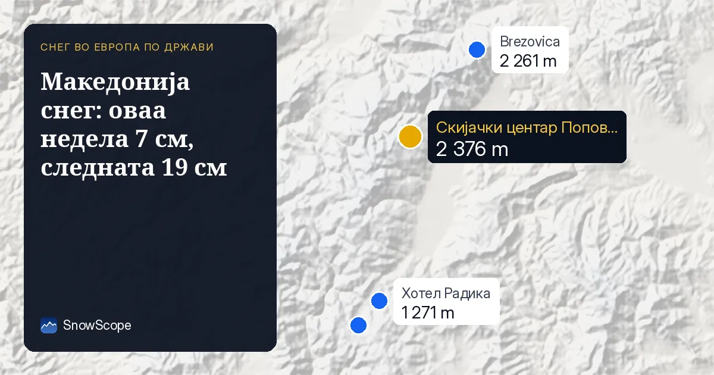

Македонија снег: оваа недела 7 см, следната 19 см
Скијачките планини на Македонија се соочуваат со двостепен почеток на зима. Оваа недела ќе донесе до 7 см снег, но вистинското нагомилување пристигнува следната недела кога се предвидува 19 см снег да паѓа помеѓу 24 и 30 ноември.
Погледнете ја прогнозата за снег за Скијачки центар Попова шапка во апликацијата SnowScopeДебелина на снегот, известувања и 3D карта, бесплатно.
Две недели напред: скромен почеток, потоа повеќе снег
Вода складирана како снег низ планините на Македонија остатува ретка во средина на ноември. Нашиот модел покрива 15.870 км2 планински терен и покажува само 160 км2 тренутно беле, нагоре од само 10 км2 пред седум денови. Планините се сè уште во голема мера суве.
Оваа недела (17 до 23 ноември) ќе додаде снег, но постепено. Очекуваме максимум 7 см по највисоките падини. Најснежниот поединачен ден оваа недела ќе биде 23 ноември, кога може да паѓа 6 см. Линијата на снег е на 2.200 м, така што само највисоките врвови ќе фатат многу.
Следната недела донесува посилен сигнал. Помеѓу 24 и 30 ноември, нашиот модел предвидува до 19 см на високото терено. Тоа е скоро три пати повеќе отколку оваа недела, и важно е за складирање на планинска вода во почетокот на зима. Снегот веројатно ќе се нагомилува поредовно во повисоките слојеви.
| Ски-центар | Дебелина на снегот | Нов снег, 72 ч | Наредните денови | Врв |
|---|---|---|---|---|
| Скијачки центар Попова шапка | 2 cm | 10 cm | 0 cm | 2 376 m |

Каде снегот паѓа сега
Во текот на последните три денови, планините Мавро фатиле наибольше снег: 37 см на висина. Ово је издватачен простор управо. Планините Шар примиле 10 см во исто време, а Пелистер 3 см. Овие бројки показуваат дека височина и позиција имаат голема важност во раната ноември—само високото терено фата значајно паѓање.
Нашиот модел проценува дека 90 км2 планински простор примил најмалку 5 см свежо снег во последних 72 часа. Тоа е вистинско нагомилување, но раширено танко низ огромен простор. На резолуцијата која ја мериме, длабочина на снег на 2.000 до 2.500 м просечно износи само 1 см, со покривање на снег на 42 проценти од таа лента. Под 2.000 м, планините се сè уште голи.
Скијачки центри и недела напред
Од осум скијачки центри низ Македонија, само еден има мерлив снег денес: Скијачки центар Попова шапка, на 2.376 м, има 2 см. Примил 10 см во текот на последните три денови и го занимава врвот на рангирањето на земјата по длабочина. Следните три денови нема да додадат свежо снег таму—услови ќе бидат статични. По 20 ноември, очекуваме да пристигне свежо снег.
Соседниот скијачки центар на Бугарија Borovets, тренутно има 5 см и се соочува со 9 см во следната недела. Скијачкиот центар на Албанија Ski Pista Bigëll покажува 0 см, но се предвидува 16 см во текот на седум денови. Балканите се сè уште во раната сезона: снегот е флатен, длабочините се мали, и прогнозата е поважна од денешните услови.
Снег по висина: кога длабочина расте
Височина е се во моментов. Помеѓу 1.500 и 2.000 м, нашиот модел покажува нулто покривање со снег. Помеѓу 2.000 и 2.500 м, просечна длабочина достигнува 1 см низ 42 проценти од теренот. Ово значи дека само високите врвови складираат вода. Пониските падини се сè уште браон.
Како што ноември напредува и бури се движат следната недела, очекуваме линијата на снег да се спушти и длабочина во горните ленти да расте. До крајот на ноември, лентата 1.500 до 2.000 м може да има снег, особено по настанот 24 до 30 ноември. Несигурност на мерењето е највисока рано во сезона бидејќи снегот е тенок и флатен—камења или голо тло може да лежи токму испод површината.
Поглед напред две недели
Водната ситуација на Македонија се подобрува полека. Оваа прва недела додава скромни резерви; втората недела е поважна за нагомилување на зима. Ако прогнозата 19 см за 24 до 30 ноември се потврди, планините ќе имаат значаен снег по прв пат оваа сезона.
Скијачите треба внимателно да следат прогноза од 20 ноември, бидејќи тоа е кога системот е предвиден да пристигне. Раниот сезонски снег е тенок и може да сокрие камења или стара оштета, така што претпазливост остатува суштинска. По 20 ноември, условите ќе почнат да се градат кон зима.
Совети за скијачи
- Следи го периодот од 20 до 23 ноември: прв организиран снежен настан. Планините Мавро и Шар, кои фатаат најмногу влага, веројатно ќе го водат земјата.
- Не верувај комплетно на тенок раниот сезонски снег. Дури и каде нашиот модел покажува покривање, камења или голи делови може да лежат блиску испод. Останеј на писта и провери официјални авалансни билтени ако одиш надвор од писта.
- Височините над 2.200 м ќе примат снег прв. Пониските падини ќе останат суве оваа недела. Планирај маршути соодветно.
- Вистинското нагомилување почнува 24 ноември. Ако планираш патување, втората половина на ноември ќе понуди подобри услови отколку прва половина.
About these numbers
Resort snow depths are the deepest snow on the resort's upper slopes from the SnowScope snow model (about 1 km, run of 16 ноември); they are estimates for an area, not a measurement at one point. Station values are measurements on the date shown. Forecasts can change. Always read the official avalanche bulletin before going off-piste.
Cite this report
For research, teaching or the press: the numbers and charts are free to reuse under CC BY 4.0 with this citation.
SnowScope (2026), Македонија снег: оваа недела 7 см, следната 19 см, https://snowscope.app/blog/mk/2026/11/north-macedonia-snow-report-16-november-2026.html, accessed 2026-11-16
SnowScope (Atlas Labs). (2026, November 16). Македонија снег: оваа недела 7 см, следната 19 см. SnowScope snow reports. https://snowscope.app/blog/mk/2026/11/north-macedonia-snow-report-16-november-2026.html
BibTeX
@misc{snowscope2026northmacedoniasnowreport,
author = {{SnowScope (Atlas Labs)}},
title = {Македонија снег: оваа недела 7 см, следната 19 см},
year = {2026},
month = nov,
howpublished = {\url{https://snowscope.app/blog/mk/2026/11/north-macedonia-snow-report-16-november-2026.html}},
note = {Published 2026-11-16 20:42 UTC; accessed 2026-11-16}
}· CC BY 4.0 · Methods, data and tools →
Скијачки центар Попова шапка: snow and temperature by height, this winter vs last (tools) →
Follow Скијачки центар Попова шапка
Бесплатно: порака кога доаѓа нов снег и прогнозата секое утро.